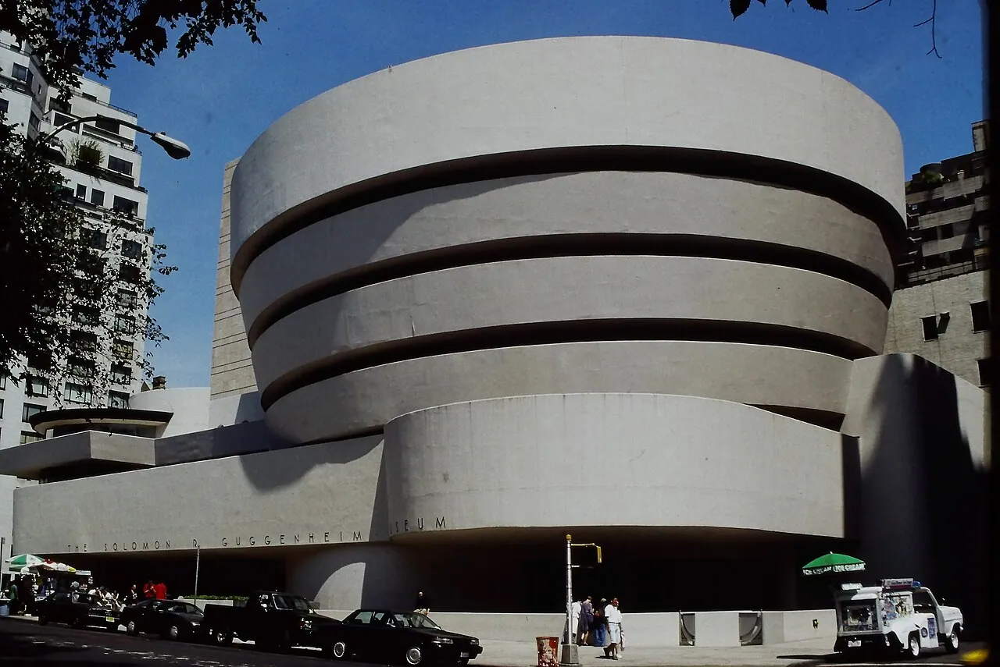
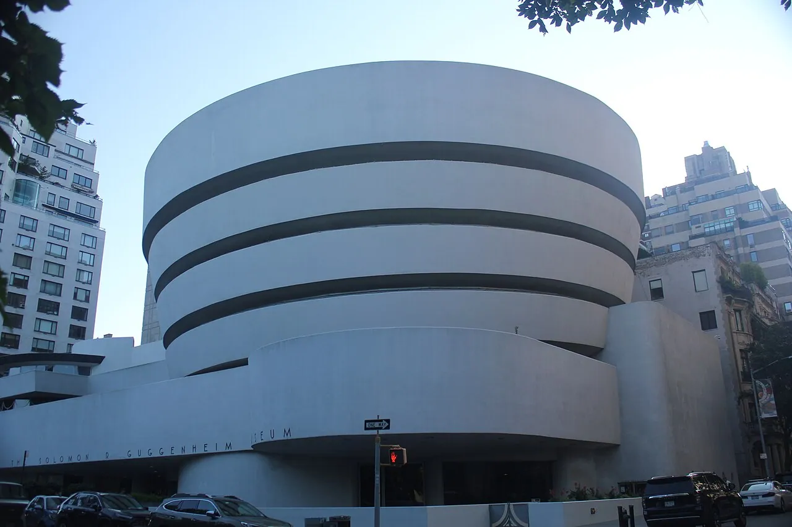
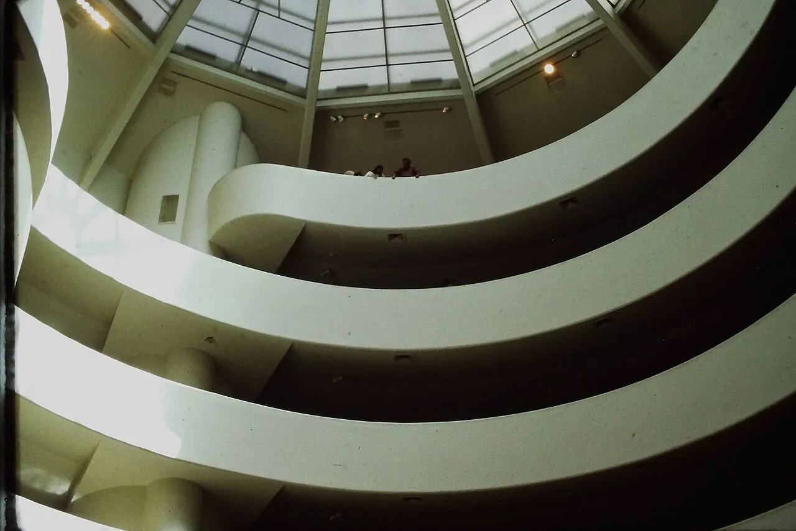
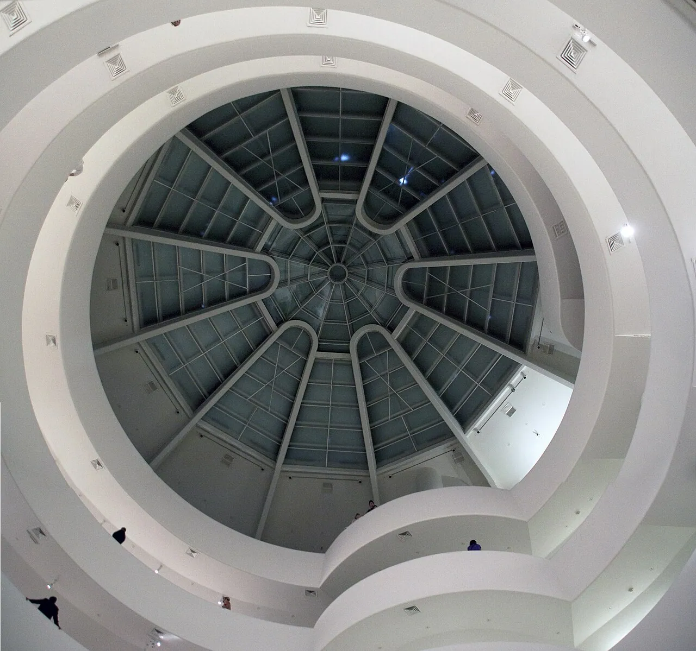
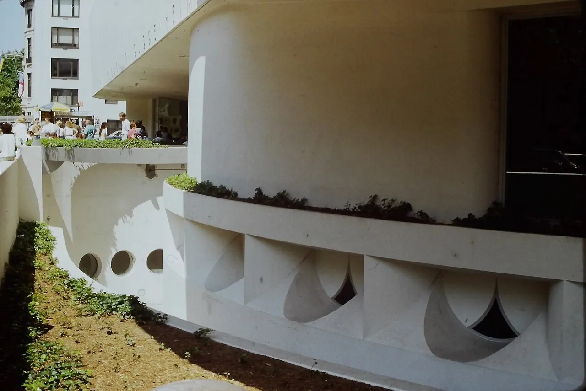
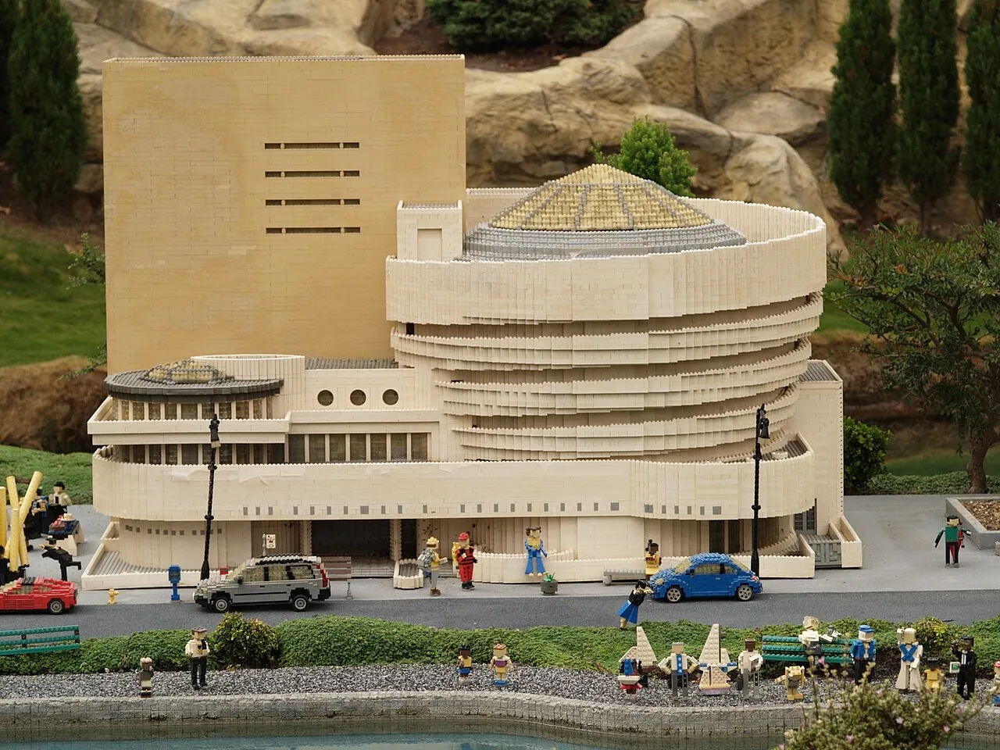

1/8 · Exterior · Opened in 1959Photo: Bmzuckerman · CC BY 4.0 · source
2/8 · Exterior · The Solomon RPhoto: Epicgenius · CC BY-SA 4.0 · source3/8 · Exterior · Opened in 1959Photo: Bmzuckerman · CC BY 4.0 · source
4/8 · Interior · Opened in 1959Photo: Bmzuckerman · CC BY 4.0 · source5/8 · Interior · Opened in 1959Photo: Bmzuckerman · CC BY 4.0 · source
6/8 · Interior · Guggenheim CeilingPhoto: Tony Hisgett from Birmingham, UK · CC BY 2.0 · source
7/8 · Detail · Opened in 1959Photo: Bmzuckerman · CC BY 4.0 · source
8/8 · Model · Legoland California's Miniland features this model of the Guggenheim MuseumPhoto: mliu92 from San Mateo · CC BY-SA 2.0 · sourceMuseum · Modernism
Solomon R. Guggenheim Museum
Frank Lloyd Wright · New York, United States · 1959
Key featuresOne continuous spiral ramp around a skylit atrium replaces floors and rooms.
- Architect
- Frank Lloyd Wright
- Place
- New York, United States
- Year
- 1959
- Typology
- Museum
- Movement
- Modernism
- Region
- Americas
See it on the wall


.jpg){kind=link}

.jpg){kind=link}
.jpg){kind=link}
.jpg){kind=link}
.jpg){kind=link}
.jpg){kind=link}
.jpg){kind=link}